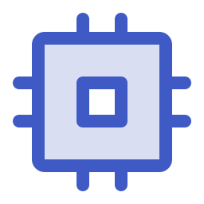
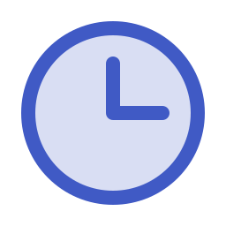
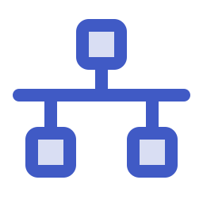
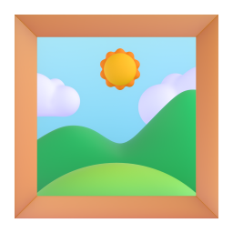
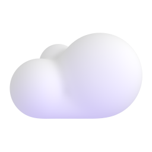

lucide:clipboardclipboard 任务 检查 清单 需求分析
lucide:clipboardclipboard 任务 检查 清单 需求分析
lucide:folderfolder 文件夹 素材收集 资料
lucide:layerslayers 大纲生成 层级 架构
lucide:presentationpresentation 幻灯片生成 汇报 演示
lucide:imageimage 图像 图片 图片版
lucide:file-textPDF file-pdf 导出 文档
lucide:penciledit 修改 可编辑版 编辑
lucide:workflowworkflow 工作流 流程 编排
lucide:databasedatabase 数据 数据库 缓存
lucide:serverserver 后端 服务 服务器
lucide:cloudcloud 云 部署
lucide:shieldshield 安全 权限 鉴权
lucide:cpucpu 模型 芯片 计算
lucide:chart-barchart 图表 指标 结果 统计
lucide:codecode 代码 实现 开发
lucide:clockclock 延迟 性能 时间
lucide:usersusers 协作 团队 用户
lucide:linklink 导出链路 连接 链接
lucide:targettarget 目标 问题
lucide:settingssettings 方法 设置 配置
lucide:downloaddownload 下载 导出
lucide:searchsearch 分析 搜索 检索
lucide:lightbulblightbulb 创意 思路
lucide:checkcheck 完成 验证
lucide:git-branchbranch 分支 路由
lucide:networknetwork 架构 网络
lucide:bookbook 学习 文档 知识
lucide:rocketrocket 发布 效率
lucide:trophytrophy 奖励 成果
lucide:puzzlepuzzle 模块 集成
tabler:clipboardclipboard 任务 检查 清单 需求分析
tabler:folderfolder 文件夹 素材收集 资料
tabler:stacklayers 大纲生成 层级 架构
tabler:presentationpresentation 幻灯片生成 汇报 演示
tabler:image-generationimage 图像 图片 图片版
tabler:file-textPDF file-pdf 导出 文档
tabler:editedit 修改 可编辑版 编辑
tabler:databasedatabase 数据 数据库 缓存
tabler:serverserver 后端 服务 服务器
tabler:cloudcloud 云 部署
tabler:shieldshield 安全 权限 鉴权
tabler:cpucpu 模型 芯片 计算
tabler:chart-barchart 图表 指标 结果 统计
tabler:codecode 代码 实现 开发
tabler:clockclock 延迟 性能 时间
tabler:usersusers 协作 团队 用户
tabler:linklink 导出链路 连接 链接
tabler:targettarget 目标 问题
tabler:settingssettings 方法 设置 配置
tabler:downloaddownload 下载 导出
tabler:searchsearch 分析 搜索 检索
tabler:bulblightbulb 创意 思路
tabler:checkcheck 完成 验证
tabler:git-branchbranch 分支 路由
tabler:networknetwork 架构 网络
tabler:bookbook 学习 文档 知识
tabler:rocketrocket 发布 效率
tabler:trophytrophy 奖励 成果
tabler:puzzlepuzzle 模块 集成
ph:clipboard-duotoneclipboard 任务 检查 清单 需求分析
ph:folder-duotonefolder 文件夹 素材收集 资料
ph:stack-duotonelayers 大纲生成 层级 架构
ph:presentation-duotonepresentation 幻灯片生成 汇报 演示
ph:image-duotoneimage 图像 图片 图片版
ph:file-pdf-duotonePDF file-pdf 导出 文档
ph:pencil-duotoneedit 修改 可编辑版 编辑
ph:flow-arrow-duotoneworkflow 工作流 流程 编排
ph:database-duotonedatabase 数据 数据库 缓存
ph:cloud-duotonecloud 云 部署
ph:shield-duotoneshield 安全 权限 鉴权

ph:cpu-duotonecpu 模型 芯片 计算
ph:chart-bar-duotonechart 图表 指标 结果 统计
ph:code-duotonecode 代码 实现 开发

ph:clock-duotoneclock 延迟 性能 时间
ph:users-duotoneusers 协作 团队 用户
ph:link-duotonelink 导出链路 连接 链接
ph:target-duotonetarget 目标 问题
ph:gear-duotonesettings 方法 设置 配置
ph:download-duotonedownload 下载 导出
ph:file-search-duotonesearch 分析 搜索 检索
ph:lightbulb-duotonelightbulb 创意 思路
ph:check-duotonecheck 完成 验证
ph:fork-knife-duotonebranch 分支 路由

ph:network-duotonenetwork 架构 网络
ph:book-duotonebook 学习 文档 知识
ph:rocket-duotonerocket 发布 效率
ph:trophy-duotonetrophy 奖励 成果
ph:puzzle-piece-duotonepuzzle 模块 集成
fluent:clipboard-24-regularclipboard 任务 检查 清单 需求分析
fluent:folder-24-regularfolder 文件夹 素材收集 资料
fluent:stack-24-regularlayers 大纲生成 层级 架构
fluent:slide-add-24-regularpresentation 幻灯片生成 汇报 演示
fluent:image-24-regularimage 图像 图片 图片版
fluent:document-pdf-24-regularPDF file-pdf 导出 文档
fluent:edit-24-regularedit 修改 可编辑版 编辑
fluent:flow-24-regularworkflow 工作流 流程 编排
fluent:database-24-regulardatabase 数据 数据库 缓存
fluent:server-24-regularserver 后端 服务 服务器
fluent:cloud-24-regularcloud 云 部署
fluent:shield-24-regularshield 安全 权限 鉴权
fluent:chart-person-24-regularchart 图表 指标 结果 统计
fluent:code-24-regularcode 代码 实现 开发
fluent:clock-24-regularclock 延迟 性能 时间
fluent:people-24-regularusers 协作 团队 用户
fluent:link-24-regularlink 导出链路 连接 链接
fluent:target-24-regulartarget 目标 问题
fluent:settings-24-regularsettings 方法 设置 配置
fluent:arrow-download-24-regulardownload 下载 导出
fluent:search-24-regularsearch 分析 搜索 检索
fluent:lightbulb-24-regularlightbulb 创意 思路
fluent:check-24-regularcheck 完成 验证
fluent:branch-24-regularbranch 分支 路由
fluent:network-check-24-regularnetwork 架构 网络
fluent:book-24-regularbook 学习 文档 知识
fluent:rocket-24-regularrocket 发布 效率
fluent:trophy-24-regulartrophy 奖励 成果
fluent:puzzle-cube-24-regularpuzzle 模块 集成
fluent-color:clipboard-24clipboard 任务 检查 清单 需求分析
fluent-color:document-folder-24folder 文件夹 素材收集 资料
fluent-color:layer-diagonal-person-24layers 大纲生成 层级 架构
fluent-color:slide-text-sparkle-24presentation 幻灯片生成 汇报 演示
fluent-color:image-24image 图像 图片 图片版
fluent-color:document-24PDF file-pdf 导出 文档
fluent-color:edit-24edit 修改 可编辑版 编辑
fluent-color:database-24database 数据 数据库 缓存
fluent-color:cloud-24cloud 云 部署
fluent-color:shield-24shield 安全 权限 鉴权
fluent-color:chart-multiple-24chart 图表 指标 结果 统计
fluent-color:code-24code 代码 实现 开发
fluent-color:clock-24clock 延迟 性能 时间
fluent-color:people-24users 协作 团队 用户
fluent-color:link-24link 导出链路 连接 链接
fluent-color:settings-24settings 方法 设置 配置
fluent-color:search-visual-24search 分析 搜索 检索
fluent-color:lightbulb-24lightbulb 创意 思路
fluent-color:checkmark-circle-24check 完成 验证
fluent-color:share-ios-24network 架构 网络
fluent-color:book-24book 学习 文档 知识
fluent-color:trophy-24trophy 奖励 成果
fluent-color:puzzle-piece-24puzzle 模块 集成
material-symbols:folderfolder 文件夹 素材收集 资料
material-symbols:layerslayers 大纲生成 层级 架构
material-symbols:slideshowpresentation 幻灯片生成 汇报 演示
material-symbols:imageimage 图像 图片 图片版
material-symbols:document-share-outline-roundedPDF file-pdf 导出 文档
material-symbols:editedit 修改 可编辑版 编辑
material-symbols:databasedatabase 数据 数据库 缓存
material-symbols:server-person-outline-roundedserver 后端 服务 服务器
material-symbols:cloudcloud 云 部署
material-symbols:shieldshield 安全 权限 鉴权
material-symbols:chip-extractioncpu 模型 芯片 计算
material-symbols:bar-chartchart 图表 指标 结果 统计
material-symbols:codecode 代码 实现 开发
material-symbols:clock-arrow-up-outline-roundedclock 延迟 性能 时间
material-symbols:people-size-decreaseusers 协作 团队 用户
material-symbols:linklink 导出链路 连接 链接
material-symbols:targettarget 目标 问题
material-symbols:settingssettings 方法 设置 配置
material-symbols:downloaddownload 下载 导出
material-symbols:searchsearch 分析 搜索 检索
material-symbols:lightbulblightbulb 创意 思路
material-symbols:checkcheck 完成 验证
material-symbols:fork-leftbranch 分支 路由
material-symbols:sharenetwork 架构 网络
material-symbols:bookbook 学习 文档 知识
material-symbols:rocketrocket 发布 效率
material-symbols:trophytrophy 奖励 成果
carbon:copy-to-clipboardclipboard 任务 检查 清单 需求分析
carbon:folderfolder 文件夹 素材收集 资料
carbon:layerslayers 大纲生成 层级 架构
carbon:presentation-filepresentation 幻灯片生成 汇报 演示
carbon:imageimage 图像 图片 图片版
carbon:document-pdfPDF file-pdf 导出 文档
carbon:editedit 修改 可编辑版 编辑
carbon:flowworkflow 工作流 流程 编排
carbon:database-etcddatabase 数据 数据库 缓存
carbon:server-dnsserver 后端 服务 服务器
carbon:cloudcloud 云 部署
carbon:shield-alertshield 安全 权限 鉴权
carbon:chipcpu 模型 芯片 计算
carbon:chart-barchart 图表 指标 结果 统计
carbon:codecode 代码 实现 开发
carbon:personusers 协作 团队 用户
carbon:linklink 导出链路 连接 链接
carbon:targettarget 目标 问题
carbon:settingssettings 方法 设置 配置
carbon:downloaddownload 下载 导出
carbon:searchsearch 分析 搜索 检索
carbon:checkmarkcheck 完成 验证
carbon:branchbranch 分支 路由
carbon:sharenetwork 架构 网络
carbon:bookbook 学习 文档 知识
carbon:rocketrocket 发布 效率
carbon:trophytrophy 奖励 成果
bi:clipboardclipboard 任务 检查 清单 需求分析
bi:folderfolder 文件夹 素材收集 资料
bi:layerslayers 大纲生成 层级 架构
bi:easelpresentation 幻灯片生成 汇报 演示
bi:imageimage 图像 图片 图片版
bi:file-pdfPDF file-pdf 导出 文档
bi:penciledit 修改 可编辑版 编辑
bi:diagram-2workflow 工作流 流程 编排
bi:databasedatabase 数据 数据库 缓存
bi:serverserver 后端 服务 服务器
bi:cloudcloud 云 部署
bi:shieldshield 安全 权限 鉴权
bi:cpucpu 模型 芯片 计算
bi:bar-chartchart 图表 指标 结果 统计
bi:codecode 代码 实现 开发
bi:clockclock 延迟 性能 时间
bi:peopleusers 协作 团队 用户
bi:linklink 导出链路 连接 链接
bi:bullseyetarget 目标 问题
bi:gearsettings 方法 设置 配置
bi:downloaddownload 下载 导出
bi:searchsearch 分析 搜索 检索
bi:lightbulblightbulb 创意 思路
bi:checkcheck 完成 验证
bi:fork-knifebranch 分支 路由
bi:sharenetwork 架构 网络
bi:bookbook 学习 文档 知识
bi:rocketrocket 发布 效率
bi:trophytrophy 奖励 成果
bi:puzzlepuzzle 模块 集成
heroicons:clipboardclipboard 任务 检查 清单 需求分析
heroicons:folderfolder 文件夹 素材收集 资料
heroicons:inbox-stacklayers 大纲生成 层级 架构
heroicons:presentation-chart-barpresentation 幻灯片生成 汇报 演示
heroicons:documentPDF file-pdf 导出 文档
heroicons:penciledit 修改 可编辑版 编辑
heroicons:serverserver 后端 服务 服务器
heroicons:cloudcloud 云 部署
heroicons:shield-checkshield 安全 权限 鉴权
heroicons:cpu-chipcpu 模型 芯片 计算
heroicons:chart-barchart 图表 指标 结果 统计
heroicons:code-bracketcode 代码 实现 开发
heroicons:clockclock 延迟 性能 时间
heroicons:usersusers 协作 团队 用户
heroicons:linklink 导出链路 连接 链接
heroicons:cogsettings 方法 设置 配置
heroicons:light-bulblightbulb 创意 思路
heroicons:checkcheck 完成 验证
heroicons:sharenetwork 架构 网络
heroicons:book-openbook 学习 文档 知识
heroicons:rocket-launchrocket 发布 效率
heroicons:trophytrophy 奖励 成果
heroicons:puzzle-piecepuzzle 模块 集成
iconoir:clipboard-checkclipboard 任务 检查 清单 需求分析
iconoir:folderfolder 文件夹 素材收集 资料
iconoir:book-stacklayers 大纲生成 层级 架构
iconoir:presentationpresentation 幻灯片生成 汇报 演示
iconoir:media-imageimage 图像 图片 图片版
iconoir:submit-documentPDF file-pdf 导出 文档
iconoir:editedit 修改 可编辑版 编辑
iconoir:databasedatabase 数据 数据库 缓存
iconoir:serverserver 后端 服务 服务器
iconoir:cloudcloud 云 部署
iconoir:shieldshield 安全 权限 鉴权
iconoir:cpucpu 模型 芯片 计算
iconoir:candlestick-chartchart 图表 指标 结果 统计
iconoir:codecode 代码 实现 开发
iconoir:clockclock 延迟 性能 时间
iconoir:people-tagusers 协作 团队 用户
iconoir:linklink 导出链路 连接 链接
iconoir:settingssettings 方法 设置 配置
iconoir:downloaddownload 下载 导出
iconoir:searchsearch 分析 搜索 检索
iconoir:light-bulblightbulb 创意 思路
iconoir:checkcheck 完成 验证
iconoir:git-branchbranch 分支 路由
iconoir:networknetwork 架构 网络
iconoir:bookbook 学习 文档 知识
iconoir:rocketrocket 发布 效率
iconoir:trophytrophy 奖励 成果
iconoir:puzzlepuzzle 模块 集成
fluent-emoji-flat:clipboardclipboard 任务 检查 清单 需求分析
fluent-emoji-flat:file-folderfolder 文件夹 素材收集 资料
fluent-emoji-flat:playground-slidepresentation 幻灯片生成 汇报 演示
fluent-emoji-flat:penciledit 修改 可编辑版 编辑
fluent-emoji-flat:cloudcloud 云 部署
fluent-emoji-flat:shieldshield 安全 权限 鉴权
fluent-emoji-flat:bar-chartchart 图表 指标 结果 统计
fluent-emoji-flat:alarm-clockclock 延迟 性能 时间
fluent-emoji-flat:people-huggingusers 协作 团队 用户
fluent-emoji-flat:linklink 导出链路 连接 链接
fluent-emoji-flat:bullseyetarget 目标 问题
fluent-emoji-flat:gearsettings 方法 设置 配置
fluent-emoji-flat:light-bulblightbulb 创意 思路
fluent-emoji-flat:check-markcheck 完成 验证
fluent-emoji-flat:fork-and-knifebranch 分支 路由
fluent-emoji-flat:blue-bookbook 学习 文档 知识
fluent-emoji-flat:rocketrocket 发布 效率
fluent-emoji-flat:trophytrophy 奖励 成果
fluent-emoji-flat:puzzle-piecepuzzle 模块 集成

fluent-3d:clipboard需求分析 清单 clipboard
fluent-3d:file-folder素材收集 文件夹 file_folder
fluent-3d:card-index-dividers大纲生成 分类 card_index_dividers

fluent-3d:framed-picture幻灯片生成 图片 framed_picture

fluent-3d:memo编辑 文档 memo
fluent-3d:gear方法 配置 gear

fluent-3d:link导出链路 连接 link

fluent-3d:books知识 素材 books

fluent-3d:rocket发布 效率 rocket

fluent-3d:light-bulb创意 思路 light_bulb
fluent-3d:bullseye问题 目标 bullseye
fluent-3d:trophy结果 成果 trophy
fluent-3d:bar-chart图表 指标 bar_chart
fluent-3d:magnifying-glass-tilted-left检索 搜索 magnifying_glass_tilted_left
fluent-3d:locked权限 安全 locked

fluent-3d:laptop电脑 开发 laptop

fluent-3d:cloud云 部署 cloud

fluent-3d:package构建 安装包 package

fluent-3d:inbox-tray导入 下载 inbox_tray
fluent-3d:outbox-tray导出 上传 outbox_tray

fluent-3d:briefcase工作 项目 briefcase
fluent-3d:globe-with-meridians网络 全球 globe_with_meridians
fluent-3d:puzzle-piece模块 集成 puzzle_piece
fluent-3d:chart-increasing增长 数据 chart_increasing